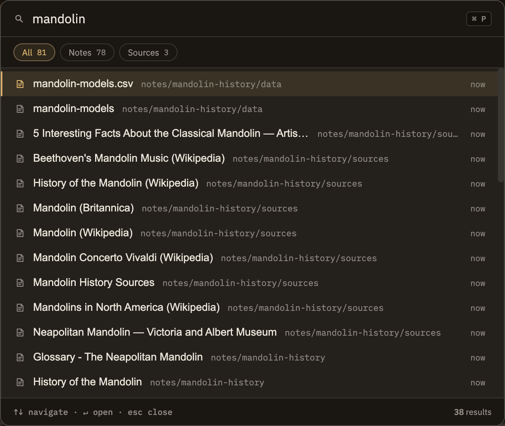

Docs/Navigation/Quick switch
Quick switch
Press ⌘P (or CtrlP) and start typing to jump straight to a note, a source, or a saved query by name. The list narrows as you type, and the arrow keys plus Enter take you the rest of the way — no mouse, no hunting through the sidebar.
Search notes, sources, and queries
Quick switch isn't limited to notes. When your project also has sources or saved queries, a row of filter chips appears and the picker searches across all three at once:
Each chip shows how many results it holds. If you don't have any sources or saved queries yet, the chips simply don't appear and quick switch acts as a plain notes picker.

Typing to find things
You don't have to type a title exactly. Quick switch is forgiving, so a few well-chosen letters usually surface what you want:
Quick switch also looks at a note's folder location, a source's author, and a query's description, so those can help pin down a match too. Before you type anything, the list simply shows your items in their normal order.
Keyboard control
Once the picker is open, you can do everything from the keyboard:
Quick switch, command palette, and search
Minerva gives you three ways to get around, each suited to a different question:
If you roughly know what a note is called, quick switch is the fastest way to it. If you remember something you wrote but not its title, reach for Search instead — quick switch matches names, not the words inside a note.